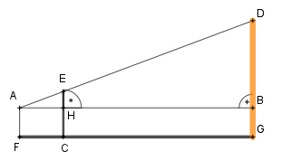
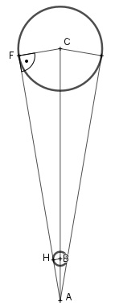
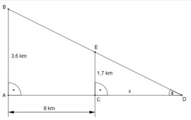
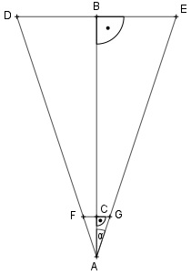

Aufgabe 1 Wie lang ist die Kathete a in cm, wenn die Kathete b = 7,8 cm und die Hypotenuse c = 9,8 cm lang sind?

Wie löse ich Matheaufgaben?
Ähnlichkeit, Strahlensatz, Verhältnisgleichung
Sie sehen ein gelbes Eingabefeld und die
Schalter: Prüfen und Lösung.
Tragen Sie Ihr Ergebnis ein, prüfen Sie es
oder starten Sie eine Lösung.
Aufgabe 1 Wie lang ist die Kathete a in cm, wenn die Kathete b = 7,8 cm und die Hypotenuse c = 9,8 cm lang sind?
Aufgabe 2 Wie lang ist die Hypotenuse c in cm, wenn die Katheten a = 7,3 cm und b = 2,1 cm lang sind?
Aufgabe 3 Eine Leiter ist 6 m lang und steht am Fußpunkt 1,3 m von einer Wand entfernt. In welcher Höhe in m berührt die Leiter die Wand?
Aufgabe 4 Eine Leiter ist 5 m lang. Sie ist genauso hoch wie die Wand, an der sie steht. Wie weit steht der Fußpunkt der Leiter in m von der Wand entfernt, wenn die Leiter die Wand oben 1 m unter der Oberkante berührt? Er ist m entfernt.
Aufgabe 5 Ein Rechteck ist 4 m lang und 2 m breit. Wie lang ist seine Diagonale d in m?
Aufgabe 6 Ein gleichseitiges Dreieck hat eine Seitenlänge s von 8 cm. Wie groß ist seine Höhe h in cm? h = cm
Aufgabe 7 Berechnen Sie x in mm.

Aufgabe 8 Berechnen Sie h in mm.
h = mm
Aufgabe 9

Aufgabe 10 Berechnen Sie x in mm.
Aufgabe 11
Aufgabe 12 Bei einem Wettkampf wird ein Ball so geworfen, dass er 15 m neben der 55 m Marke auftrifft. Wie groß war die Wurfweite w in m tatsächlich? w = m
Aufgabe 13
Aufgabe 14 Ein Baum ist bei einem Sturm in 4 m Höhe abgeknickt. Seine Spitze liegt 15 m vom Stamm entfernt. Wie hoch war der Baum in m? Er war m hoch.
Aufgabe 15
Aufgabe 16 Berechnen Sie von der Hängebrücke die Längen x und y der beiden Spannseile in m.
x = m
Aufgabe 17

Aufgabe 18 Berechnen Sie die Höhe h in cm und die Fläche A des Dreiecks in cm².
A = cm²
Aufgabe 19

Aufgabe 20 a) Berechnen Sie die Fläche A des Dreiecks in m². b) Die Fläche wird gestrichen. Der Verbrauch an Farbe beträgt 1 l pro 5 m². Wie viel l Farbe sind nötig?
A = m²
Aufgabe 21
Aufgabe 22 Eine Rutschbahn ist 1 240 m lang und überwindet einen Höhenunterschied von 220 m. Berechnen Sie die horizontale Entfernung s zwischen Start und Ziel und das Gefälle g in Prozent. g = %
Aufgabe 23

Aufgabe 24 Die Seite AD des rechtwinkligen Dreiecks soll so verlängert werden, dass sie Hypotenuse eines neuen rechtwinkligen Dreiecks wird. Wie lang ist diese Hypotenuse in cm?
Es sind cm.
Aufgabe 25

Aufgabe 26 Berechnen Sie die Fläche A des Dreiecks in cm² und den Umfang U in cm.
U = cm
Aufgabe 27
Aufgabe 28 Ein senkrecht an einer Wand stehender Stab rutscht 30 cm herunter. Dabei entfernt sich sein Fußpunkt einen halben Meter von der Wand. Wie lang ist der Stab in m? Es sind m
Aufgabe 29

Aufgabe 30 Der Punkt B wurde von A und C aus über einen Fluss hinweg anvisiert. D liegt auf der Strecke AB. Berechnen Sie die Strecke AB in m.
AB = m
Aufgabe 31
Aufgabe 32 Berechnen Sie die Höhe h einer quadratischen (Seitenlänge 230 m) und gleichseitigen (Seitenlänge 219 m) Pyramide und die Höhe s einer Seitenfläche in m. h = m
Aufgabe 33
Aufgabe 34 Eine Seilbahn führt von einem Berg (2 140 m) zu einem anderen (2 260 m). Die beiden Masten der Seilbahn sind jeweils 10 m hoch. Sie sind auf einer Karte mit dem Maßstab 1 : 10 000 5 cm auseinander. Berechnen Sie die Länge l des gespannten Seils in m, wenn es nicht durchhängt. l = m
Aufgabe 35

Aufgabe 36 Ein rechtwinkliges Dreieck hat eine Höhe von 3 cm und eine Fläche von 12 cm². Berechnen Sie die Länge der Hypotenuse c und der Katheten a und b in cm. a = m
Aufgabe 37
Aufgabe 38 In welchem Verhältnis stehen die Katheten eines rechtwinkligen Dreiecks, das die gleiche Fläche wie ein gleichseitiges Dreieck hat, wenn seine Hypotenuse 8 cm und die Seite s des gleichseitigen Dreiecks 6 cm lang ist? a : b = : 10
Aufgabe 39
Aufgabe 40 In einem rechtwinkligen Dreieck sind die Kathete a = 6 cm und b = 8 cm lang. Berechnen Sie den Inkreisradius ri und den Umkreisradius ru in cm.
b = cm
Aufgabe 41

Aufgabe 42 In ein rechtwinkliges Dreieck ist ein Quadrat mit der Seite x einbeschrieben. Drücken Sie x durch die Hypotenusenabschnitte u und v aus.
x =
Aufgabe 43 Berechnen Sie die Diagonale d in einem gleichschenkligen Trapez in cm, wenn die parallelen Seiten 6,4 cm und 3,6 cm und die Höhe 2,5 cm betragen.
Aufgabe 44 Berechnen Sie die Fläche A eines gleichseitigen Dreiecks in cm², wenn die Seite a = 5 cm. A = cm²
Aufgabe 45 Berechnen Sie die Fläche A eines gleichschenkligen Dreiecks in cm², wenn die Grundseite c = 3,2 cm und ein Schenkel s = 4,8 cm.
Aufgabe 46 Berechnen Sie die Fläche A einer Raute in cm², wenn a = 3 cm und e = 5 cm. A = cm²
Aufgabe 47 Berechnen Sie die Fläche A eines regelmäßigen Sechsecks in cm², wenn die Seite a = 6 cm.
Aufgabe 48 Berechnen Sie die Seite a eines gleichseitigen Dreiecks in cm, wenn seine Fläche A = 18 cm² beträgt. a = cm
Aufgabe 49 Berechnen Sie die Seite a eines regelmäßigen Sechsecks in cm, wenn seine Fläche A = 36 cm² beträgt.
Aufgabe 50 Ein gleichschenkliges Dreieck hat einen Umfang U = 16 cm und eine Höhe h = 4 cm. Berechnen Sie die Länge der Seiten des Dreiecks in cm. s = cm
Aufgabe 51 Berechnen Sie a in cm, wenn r = 3 cm und s = 4,8 cm.

Aufgabe 52 Berechnen Sie s in cm, wenn r = 4 cm und a = 2 cm.
Aufgabe 53 Berechnen Sie r in cm, wenn s = 6 cm und a = 2,5 cm.
Aufgabe 54 Einem Würfel mit der Seitenlänge a = 4 cm ist eine Pyramide aufgesetzt mit der Seitenlänge k = 3 cm. a) Berechnen Sie die Höhe h der Pyramide in cm. b) Wie weit in cm ist die linke untere Ecke des Würfels von der Spitze der Pyramide entfernt?
h = cm
Aufgabe 55 Eine Pyramide hat als Grundfläche ein gleichseitiges Dreieck. Die Spitze der Pyramide liegt über dem Schwerpunkt des gleichseitigen Dreiecks. Berechnen Sie die Höhe h der Pyramide in cm, wenn eine Grundseite a = 9 cm, und die Seitenlänge k der Pyramide 14 cm ist.

Aufgabe 56 Eine Pyramide hat als Grundfläche ein gleichseitiges Dreieck. Die Spitze der Pyramide liegt über dem Schwerpunkt des gleichseitigen Dreiecks. Berechnen Sie die Höhe h eines Seitendreiecks in cm, wenn die Grundseite a = 10 cm und die Seitenlänge k der Pyramide 13 cm ist.
h = cm
Aufgabe 57 Ein Satteldach ist 9 m breit und 5 m hoch. Wie lang sind die Sparren in m, wenn sie an der Dachtraufe 30 cm überstehen?

Aufgabe 58 Ein Satteldach ist 8 m breit und hat 6,20 m lange Sparren, die an der Dachtraufe 20 cm überstehen. Wie hoch ist das Dach in m?
Es ist m hoch.
Aufgabe 59 Berechnen Sie die Länge der Strecken x und y in m.

Aufgabe 60 Ein Beobachter sieht aus 150 m Entfernung und unter einem Erhebungswinkel von 30° den Lichtfleck, den ein senkrecht nach oben gerichteter Scheinwerfer an der Wolkenuntergrenze erzeugt. Wie hoch stehen die Wolken in m? h = m
Aufgabe 61 Auf einer Karte, Maßstab 1 : 25 000, ist eine Zahnradbahnstrecke 13,3 cm lang. Sie überwindet auf dieser Strecke einen Höhenunterschied von 475 m. Berechnen Sie die Länge l der Bahnstrecke in m.
Aufgabe 62 Einem gleichschenkligen, rechtwinkligen Dreieck ist ein gleichseitiges Dreieck einbeschrieben. Drücken Sie b durch a aus.
b = * a
Aufgabe 63 Einem gleichschenkligen, rechtwinkligen Dreieck ist ein gleichseitiges Dreieck einbeschrieben. Drücken sie b durch a aus.

Aufgabe 64 Von einem rechtwinkligen Dreieck sind die Hypotenusenabschnitte q = 4 cm und p = 5 cm bekannt. Berechnen Sie die Länge der Katheten a und b in cm und die Fläche A in cm².
a = cm
Aufgabe 65 Von einem rechtwinkligen Dreieck sind die Höhe h = 5 cm und der Hypotenusenabschnitt q = 3 cm gegeben. Berechnen Sie die Länge der Seiten a, b und c in cm und die Fläche A in cm².
Aufgabe 66 Berechnen Sie den Inkreisradius ri und den Ankreisradius ra eines rechtwinkligen Dreiecks in cm, wenn die Katheten a = 8 cm und b = 6 cm.
ri = cm
Aufgabe 67 Drücken Sie r2 durch r1 aus.

Aufgabe 68 Drücken Sie h1, h2 und r2 durch r1 aus.
h2 = * r1
Aufgabe 69 Drücken Sie r2, r3 und r4 durch r1 aus.

Aufgabe 70 Drücken Sie r2 und r3 durch r1 aus.
r2 = * r1
Aufgabe 71 Berechnen Sie die Höhe h des dargestellten Gefäßes in dm und das Volumen in dm³, wenn g1 = 6 dm, g2 = 8 dm, a = 5 dm und b = 4 dm betragen. 
Aufgabe 72 Mit der dargestellten Lehre läßt sich überprüfen, ob ein Spiralbohrer richtig nachgeschliffen ist. Berechnen Sie die Höhe h in mm, wenn alle Maße in mm angegeben sind.  h = mm
Aufgabe 73 Ein Damm hat den dargestellten Querschnitt. Berechnen Sie die Länge l der Böschung in m. 
Aufgabe 74 Berechnen Sie die Fläche A des einbeschriebenen Quadrates in cm².
A = cm²
Aufgabe 75 Das regelmäßige Sechseck hat eine Fläche von 120 cm². Wie lang ist eine Seite s in cm? 
Aufgabe 76 Berechnen Sie die Länge der Seite s in cm.
s = cm
Aufgabe 77 Berechnen Sie von dem gleichschenkligen Trapez den Umfang U in cm.

Aufgabe 78 Berechnen Sie die Länge der Raumdiagonalen d in cm.
d = cm
Aufgabe 79 Wie tief dürfte das 2 m hohe und mit 25 cm Tiefe gelieferte Regal höchstens sein, wenn es wie skizziert durch die Tür passen soll?

Aufgabe 80 Ein Fluss ist 180 m breit und hat eine Strömungsgeschwindigkeit vF = 0,8 m/s. Um ihn zu überqueren braucht ein Schwimmer 5 Minuten. a) Um wie viel m wird der Schwimmer dabei seitlich abgetrieben? b) Wie viel m hat der Schwimmer bei der Überquerung zurückgelegt?
a) Es sind m.
Aufgabe 81 Das Dreieck CDE hat eine Fläche von 2 cm². Der Punkt E halbiert die Strecke AB. Die Strecke DE ist 1 cm lang. Berechnen sie die Längen der Hypotenuse c, der beiden Katheten und b und der Hypotenusenabschnitte q und p.

Aufgabe 82 Berechnen Sie den Umfang U des farbigen Dreiecks in cm.
U = cm
Aufgabe 83 Das Dreieck CDE hat eine Fläche von 2 cm². Der Punkt E halbiert die Strecke AB. Die Strecke DE ist 1 cm lang. Berechnen sie die Längen der Hypotenuse c, der beiden Katheten und b und der Hypotenusenabschnitte q und p.

Aufgabe 84 Berechnen Sie die Größe der farbigen Fläche A in mm².
A = mm²
Aufgabe 85 Berechnen Sie die farbige Trapezfläche A in mm².

Aufgabe 86 Berechnen Sie die Größe der farbigen Fläche A in mm².
A = mm²
Aufgabe 87 Berechnen Sie die Länge der Strecke x in mm.

zurück